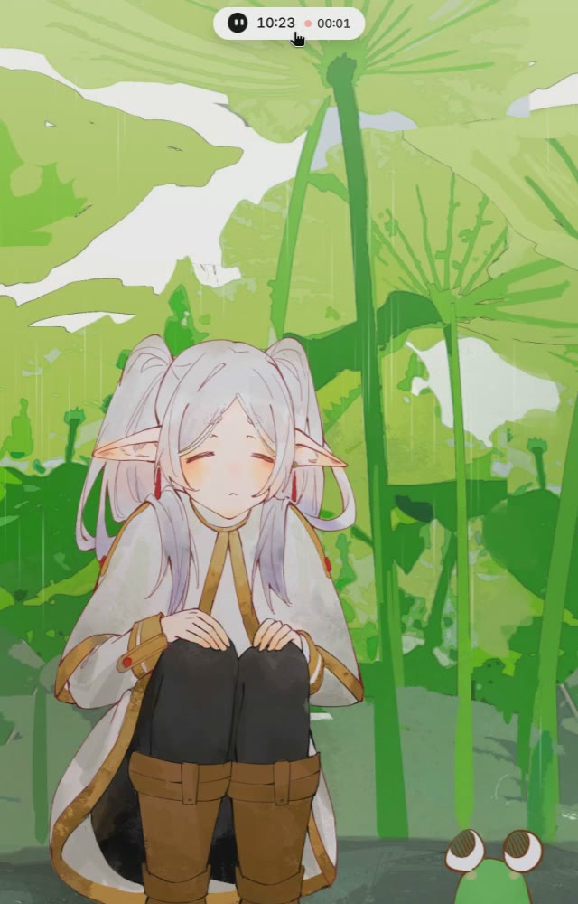
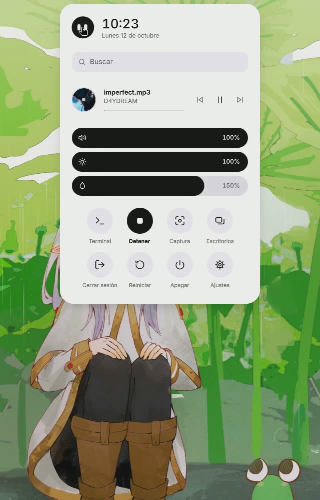
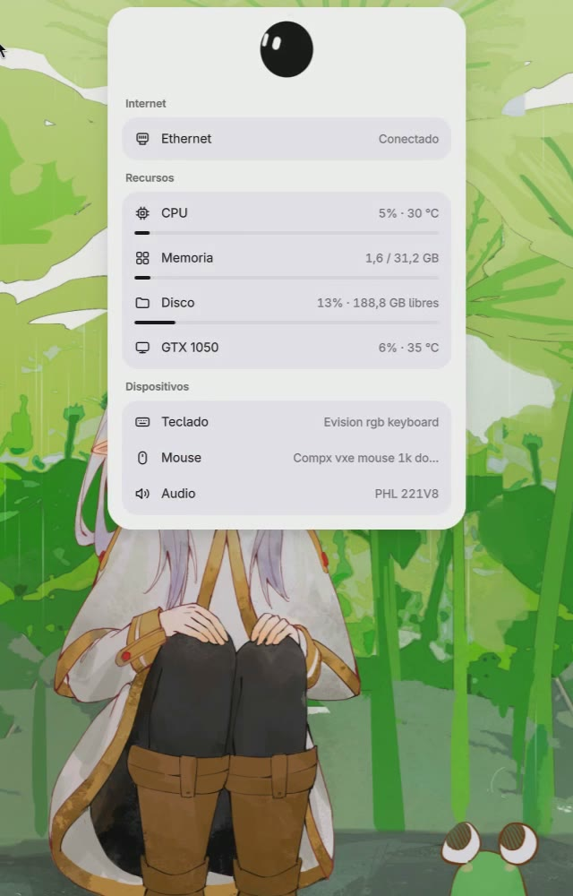
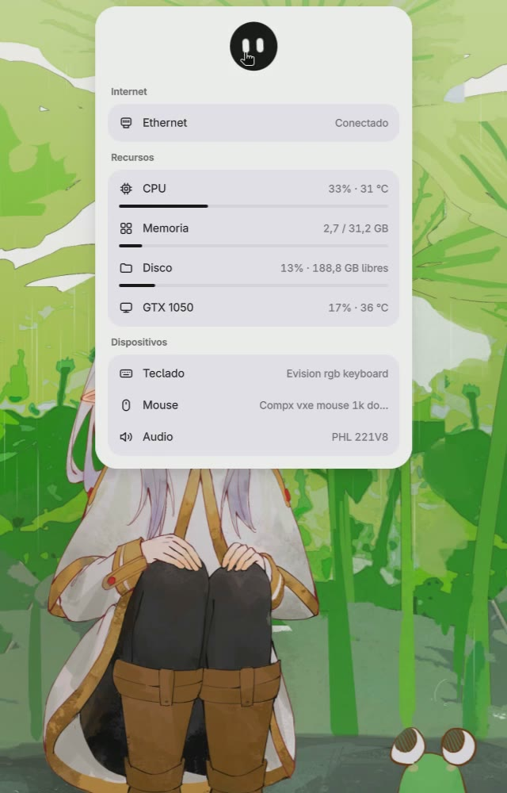
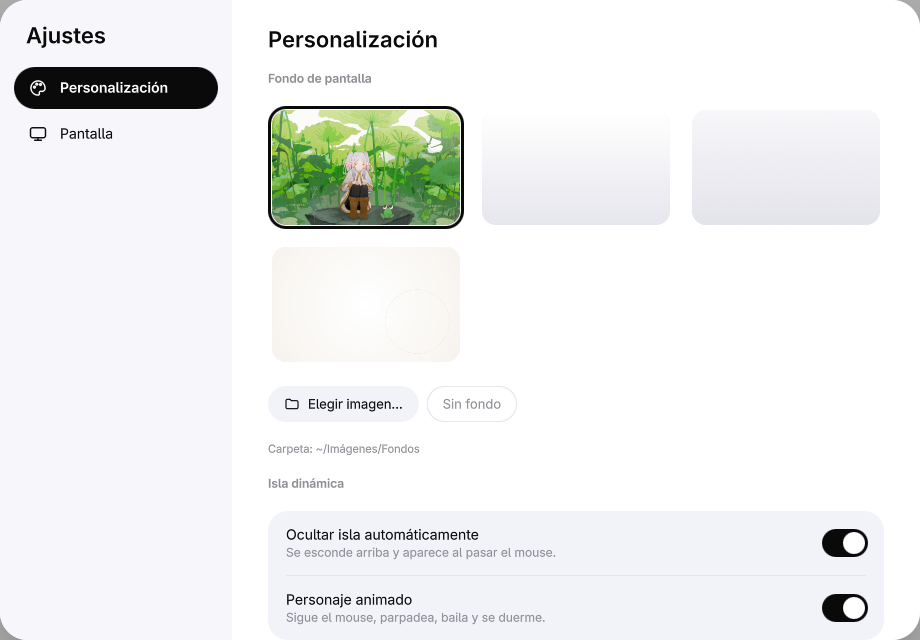
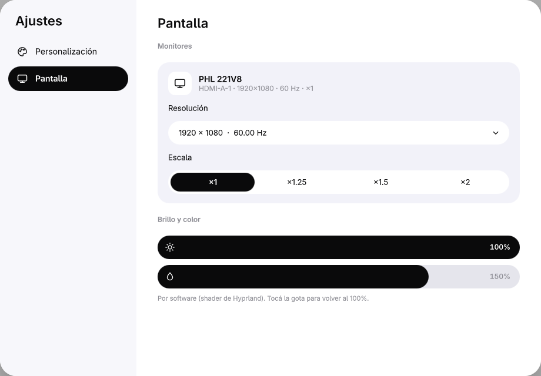
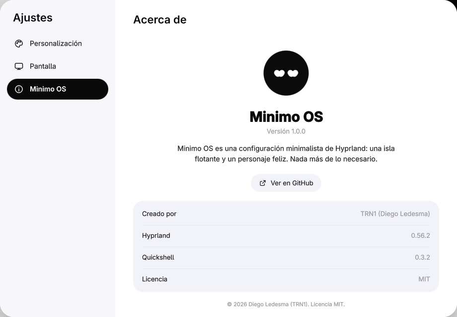

Una isla flotante. Un personaje feliz.
Pasá el mouse. Hacele varios clics seguidos.
Una configuración minimalista de Hyprland para Arch Linux. Todo gira alrededor de una isla dinámica flotante y de Minimo, un personaje que te acompaña mientras trabajás.
Flota arriba de la pantalla con la hora, la música y los escritorios. Un clic abre el menú.
Minimo sigue el mouse, parpadea, baila con la música, se duerme y le gusta que lo acaricien.
Abrí cualquier app desde la isla o con Super+B.
Capturas de área y grabación de pantalla en un toque.
Internet, procesador, memoria, disco, temperatura y dispositivos conectados, con solo deslizar la isla.
Claro u oscuro desde Personalización. El Wi-Fi aparece solo cuando lo necesitás.
Grabación real de la pantalla de Minimo OS.




Ajustes.



Una sola línea en la terminal.
curl -fsSL https://raw.githubusercontent.com/Diegolede/minimo-os/main/install.sh | bashPara ver qué haría sin instalar nada, reemplazá bash por bash -s -- --dry-run. Código e instrucciones en github.com/Diegolede/minimo-os.
Minimo OS es gratis y de código abierto. Si te gusta, una donación ayuda a seguir mejorando la isla dinámica y a sumar nuevas funciones.
Donar · Próximamente